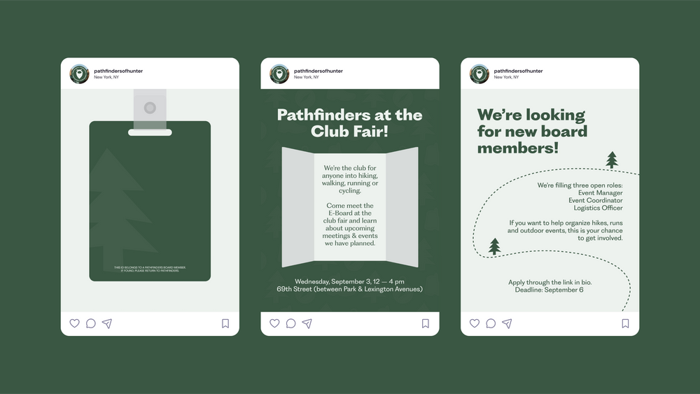
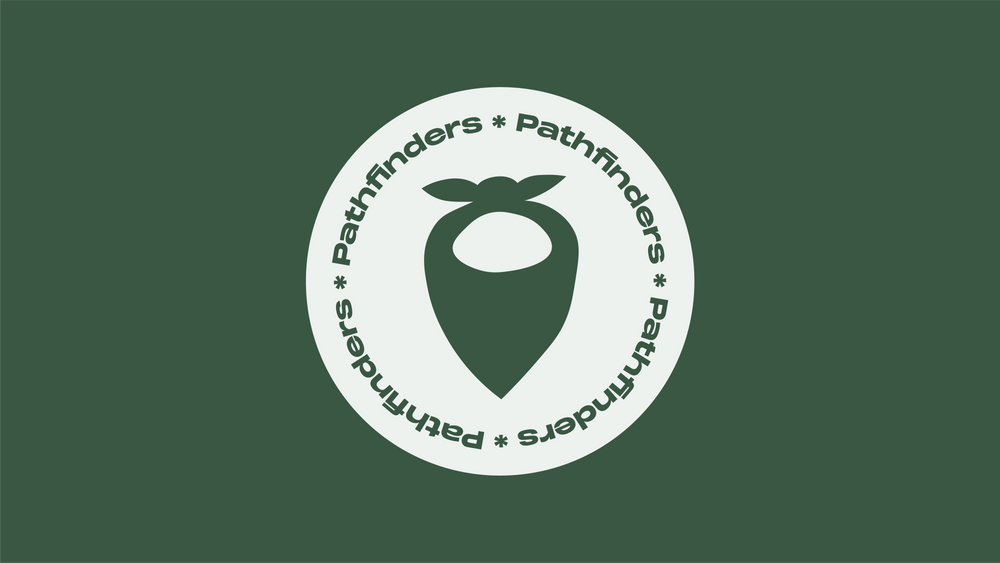
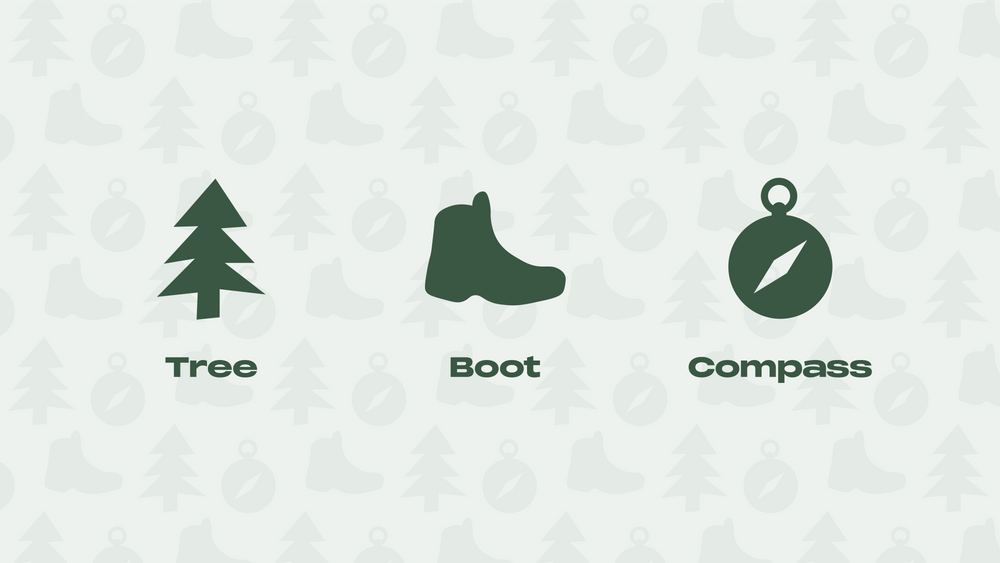
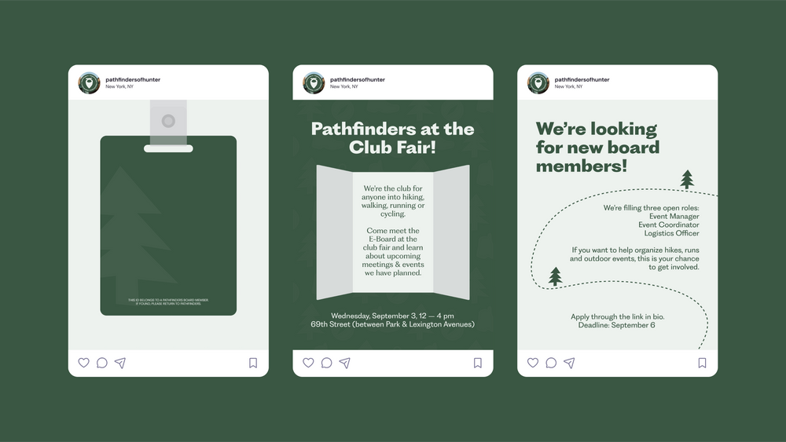
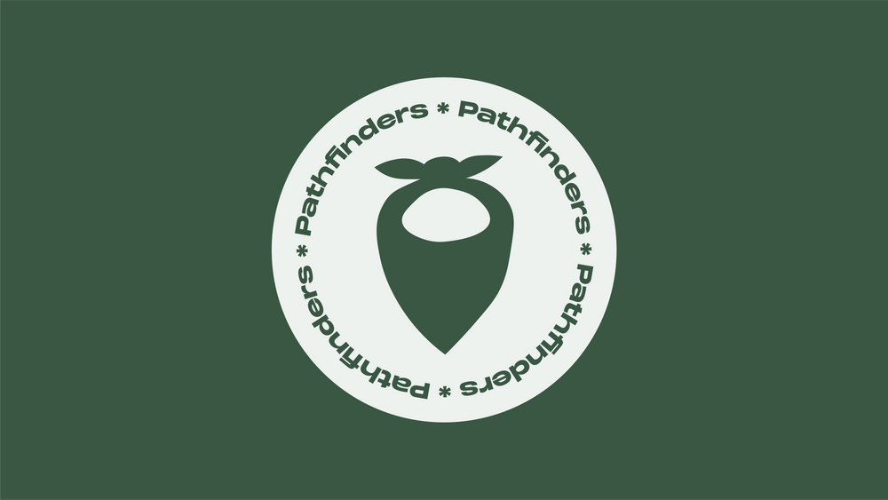
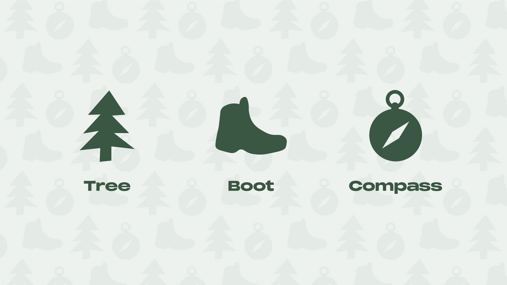

Pathfinders
 





Pathfinders is a Hunter College student organization that promotes physical activity outside of collegiate athletics. The club creates opportunities for students to engage in hiking, cycling, running, and walking while fostering inclusivity across all fitness levels. Its mission is to build community, encourage wellness, and inspire exploration. The branding reflects this spirit through outdoor symbols like a tree, a boot, and a compass to represent nature, movement, and direction reflecting the club’s focus on activity.
Photography Appreciation Club
The Photography Appreciation Club at Hunter College creates a space for students to learn and share photography through photo walks, contests, trips, and social events. The branding is playful and colorful, using stamps, stickers, and scrapbook-style layouts to reflect creativity, community, and the joy of capturing moments.